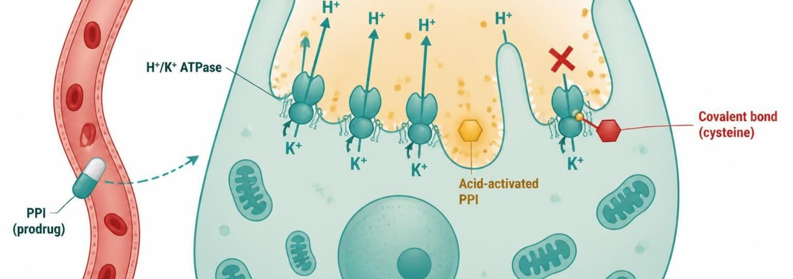
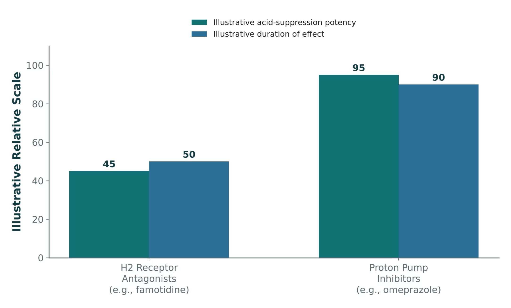

2Part 2 · Drug class
Antacids, H2 Blockers & Proton Pump Inhibitors
SO1SO2SO3SO5IO3.1IO3.2IO3.3IO3.5
Class
- Turning down acid production, or shielding the mucosa from it.S11
- Antacids neutralize acid already made; H2 blockers block the histamine input; PPIs block the final common pathway — the most potent acid suppression.S12; S13; S15; S22
- Antacids are the oldest and most “patient-directed” class — a contrast to the receptor- and enzyme-targeted agents.S12 (notes)
Prototype + other drugs named
- Omeprazole — PPI prototype (esomeprazole, pantoprazole, lansoprazole, dexlansoprazole).S15
- Famotidine — most commonly used H2 blocker; cimetidine the CYP-inhibiting one.S13
- Calcium carbonate, magnesium hydroxide, aluminum hydroxide — antacids.S12
Mechanism of action
- Antacids — mechanism: directly neutralize existing gastric acid (do not reduce acid production). Acid in stomach → antacid base (Al/Mg hydroxide, calcium carbonate) neutralizes H+ → higher gastric pH → rapid but short relief.S12
- H2RAs — mechanism: competitively block histamine at the H2 receptor on parietal cells. Histamine from ECL cells → H2 receptor → cAMP rises → stimulates the proton pump; famotidine occupies the receptor competitively, so less acid.S13; S14
- PPIs — mechanism: irreversibly inhibit the H⁺/K⁺-ATPase proton pump — the final common pathway of acid secretion.S15; SG U3-R2
- PPI prodrug activated by acid → binds H⁺/K⁺ ATPase irreversibly → final step of acid secretion blocked.S15
- Pathway: enteric-coated prodrug absorbed in the small intestine → reaches the parietal cell canaliculus → activated by acid → binds a cysteine on H⁺/K⁺-ATPase covalently → pump irreversibly blocked until new pumps are made.S16; S16 (notes)
- PPIs achieve substantially greater acid-suppression potency and longer duration of effect than H2RAs (Figure 4: potency 95 vs. 45; duration 90 vs. 50, illustrative).S17; S17 (notes)
- TBH2 blockers inhibit 60–70% of 24-hour acid secretion; PPIs inhibit 90–98% because they block the final common pathway.p. 1156; p. 1159
Indications
- Antacids: onset is rapid, but duration is short — best for intermittent, mild symptom relief.S12
- H2RAs: mild-to-moderate GERD, maintenance therapy, adjunct for peptic ulcer healing; best at controlling nocturnal acid.S13; S14
- PPIs: first-line for GERD, PUD healing, and H. pylori regimens.S15
- TBInfrequent heartburn (fewer than three times per week): antacids or as-needed H2 blockers; antacids act faster but last 1–2 hours vs. 6–10 hours.p. 1156
- TBPPIs heal over 90% of duodenal ulcers within 4 weeks; GERD recurs in over 80% within 6 months of stopping.p. 1159
- TBStress-related bleeding prophylaxis in high-risk ICU patients: an oral PPI if enteral meds are possible, otherwise IV H2 blocker or PPI.p. 1157
Adverse effects (boxed warnings first)
- PPI long-term adverse effects: vitamin B12 deficiency, hypomagnesemia, increased fracture risk, and increased risk of Clostridioides difficile infection — also pneumonia and acute interstitial nephritis.S15; S16; SG U3-R3
- Abrupt PPI discontinuation after prolonged use can cause rebound acid hypersecretion.S15
- Aluminum hydroxide — constipating. Magnesium hydroxide — can cause diarrhea; use caution in renal impairment (magnesium accumulation). Calcium carbonate — can cause constipation; risk of milk-alkali syndrome with excessive use.S12
- Cimetidine: antiandrogenic effects (gynecomastia) with prolonged use.S13; S14
- Famotidine: confusion risk in older adults with renal impairment.S13 (notes); S14
- H2RAs: tolerance (tachyphylaxis) can develop with continuous use, reducing effectiveness over time.S13; S14
- TBPPIs carry an FDA warning for hip, spine and wrist fractures and for life-threatening hypomagnesemia; 2–3-fold more C. difficile infection.p. 1160
- TBSodium bicarbonate causes belching and metabolic alkalosis; excess calcium carbonate with dairy causes hypercalcemia, renal insufficiency and alkalosis (milk-alkali).p. 1155
Contraindications
- PPIs: contraindicated with rilpivirine (an HIV drug that needs stomach acid).S46; S71
- TBMagnesium and aluminum antacids are renally excreted: avoid long-term use in renal insufficiency.p. 1155
Drug interactions
- Antacids can impair absorption of many other oral drugs — separate dosing by at least 2 hours. They bind levothyroxine, quinolones, tetracyclines, and iron.S12; S53; S71
- Omeprazole (a CYP2C19 inhibitor) can reduce clopidogrel activation, blunting its antiplatelet effect. Omeprazole and esomeprazole both inhibit CYP2C19.S15; S16; SG U3-R4
- Cimetidine is a potent CYP450 inhibitor (1A2, 2C19, 3A4) — a callback to Lecture 1: it raises warfarin, phenytoin, and theophylline levels.S13; S13 (notes); S14; S52
- Famotidine has minimal CYP450 interaction.S13
- TBAntacids should not be given within 2 hours of tetracyclines, fluoroquinolones, itraconazole, and iron.p. 1155
- TBWith clopidogrel, prefer pantoprazole or rabeprazole (minimal CYP2C19 inhibition).p. 1161
- TBLess acid lowers absorption of ketoconazole, itraconazole, digoxin, and atazanavir.p. 1161
Pharmacokinetics
- PPIs are best absorbed/effective when taken 30–60 minutes before a meal (timed to peak pump activity) — they work best on actively secreting pumps.S15; S16
- CYP2C19 genotype alters PPI exposure; ultrarapid metabolizers may need higher doses.S15 (notes); S16
- Famotidine needs renal dose adjustment.S13 (notes); S14
- TBPPIs: food cuts bioavailability by about 50%; half-life about 1.5 hours yet acid inhibition lasts up to 24 hours; full effect takes 3–4 days.p. 1158
- TBPPIs need no renal dose reduction; consider reduction in severe liver impairment.p. 1159
Monitoring
- Many patients stay on PPIs far longer than necessary — the long-term adverse-effect list drives deprescribing conversations.S15 (notes)
Clinical pearl / why
- Ask: what happens to warfarin or phenytoin levels if cimetidine is added? They rise (CYP inhibition).S13 (notes)
- Name stems: -prazole PPIs (irreversibly block H+/K+ ATPase); -tidine H2 receptor antagonists (famotidine, ranitidine, cimetidine; competitively block the H2 receptor).S28
Step by step
PPI activationS16
Enteric-coated prodrug absorbed in the small intestine→Reaches the parietal cell canaliculus→Activated by acid→Binds cysteine on H+/K+ ATPase covalently→Pump blocked until new pumps are made
H2 blocker actionS14
Histamine from ECL cells→Binds H2 receptor on the parietal cell→Raises cAMP→Stimulates the proton pump→Famotidine competes at the receptor → less acid



Table 1 · Acid-peptic disease agents at a glance
| Class | Example agent(s) | Key teaching point |
|---|---|---|
| Antacid | Calcium carbonate, magnesium hydroxide | Neutralizes existing acid; rapid onset, short duration |
| H2RA | Famotidine, cimetidine | Blocks histamine input only; cimetidine inhibits CYP450 |
| PPI | Omeprazole, pantoprazole | Blocks final common pathway; most potent, long-term AE risks |
| Mucosal protectant | Sucralfate, misoprostol | Barrier/prostaglandin replacement; misoprostol contraindicated in pregnancy |
How to tell them apart. Sources: S22; S22 (notes)
PPI drug profiles: formulation, dose, indications
| Drug | Class | Formulation | Adult dose | Indications |
|---|---|---|---|---|
| Omeprazole (Prilosec) | Proton pump inhibitor | DR capsule 10/20/40 mg; OTC 20 mg tablet; oral suspension packets | 20-40 mg PO once daily, 30-60 min before breakfast; GERD/ulcer courses 4-8 weeks | GERD, erosive esophagitis, peptic ulcer, H. pylori regimens, NSAID-ulcer prevention, Zollinger-Ellison |
| Esomeprazole (Nexium) | Proton pump inhibitor | DR capsule 20/40 mg; granule packets; IV vial 20/40 mg | 20-40 mg PO daily; IV 20-40 mg over 10-30 min daily when oral route is not possible | GERD, erosive esophagitis, H. pylori, NSAID-ulcer prevention, rebleeding risk reduction |
| Pantoprazole (Protonix) | Proton pump inhibitor | DR tablet 20/40 mg; granule packets; IV vial 40 mg | 40 mg PO daily before a meal; IV 40 mg daily for up to 7-10 days | GERD, erosive esophagitis, Zollinger-Ellison; IV when oral therapy is not possible |
| Lansoprazole (Prevacid) | Proton pump inhibitor | DR capsule 15/30 mg; orally disintegrating tablet 15/30 mg | 15-30 mg PO daily before a meal; courses 4-8 weeks | GERD, ulcers, H. pylori, NSAID-ulcer healing and prevention |
| Dexlansoprazole (Dexilant) | Proton pump inhibitor | DR capsule 30/60 mg | 30 mg daily for non-erosive GERD; 60 mg daily for up to 8 weeks for erosive esophagitis; with or without food | Erosive esophagitis healing and maintenance, non-erosive GERD heartburn |
How to tell them apart. Sources: S46; S47; S48; S49; S50
PPI drug profiles: adverse effects, contraindications, toxicity
| Drug | Adverse effects | Contraindications | Toxicity / overdose |
|---|---|---|---|
| Omeprazole (Prilosec) | Headache, diarrhea, abdominal pain, nausea; long-term: low B12 and Mg, fractures, C. difficile | Hypersensitivity to PPIs; rilpivirine co-use | Overdose rare (flushing, tachycardia, confusion); long-term hypomagnesemia; reduces clopidogrel activation (CYP2C19) |
| Esomeprazole (Nexium) | Headache, diarrhea, nausea; long-term: low B12 and Mg, fractures | Hypersensitivity to PPIs; rilpivirine co-use | Same class toxicities as omeprazole; hypomagnesemia, C. difficile; supportive care for overdose |
| Pantoprazole (Protonix) | Headache, diarrhea, nausea; long-term: low B12 and Mg, fractures | Hypersensitivity to PPIs; rilpivirine co-use | Class toxicities; fewer CYP drug interactions than omeprazole; supportive care for overdose |
| Lansoprazole (Prevacid) | Diarrhea, abdominal pain, nausea, headache; long-term: low B12 and Mg | Hypersensitivity to PPIs; rilpivirine co-use | Class toxicities; ODT contains phenylalanine; supportive care for overdose |
| Dexlansoprazole (Dexilant) | Diarrhea, abdominal pain, nausea, headache; long-term: low B12 and Mg | Hypersensitivity to PPIs; rilpivirine co-use | Class toxicities; supportive care for overdose |
How to tell them apart. Sources: S46; S47; S48; S49; S50
H2 blocker and antacid drug profiles: formulation, dose, indications
| Drug | Class | Formulation | Adult dose | Indications |
|---|---|---|---|---|
| Famotidine (Pepcid) | H2 receptor antagonist | Tablet 10 mg (OTC), 20/40 mg; IV 10 mg/mL; oral suspension | 20 mg BID or 40 mg at bedtime; reduce dose when CrCl is below 60 mL/min | GERD, duodenal and gastric ulcer, hypersecretory states, heartburn prevention |
| Cimetidine (Tagamet) | H2 receptor antagonist | Tablet 200/300/400/800 mg; oral liquid; IV | 400 mg BID or 800 mg at bedtime; adjust for renal impairment | Duodenal and gastric ulcer, GERD, hypersecretory states |
| Calcium carbonate (Tums) | Antacid and calcium supplement | Chewable tablet 500-1,000 mg; suspension | 500-1,500 mg PO as needed; respect label daily maximum (about 7,000-7,500 mg/day) | Occasional heartburn and indigestion; calcium supplementation |
| Magnesium hydroxide (Milk of Magnesia) | Antacid and osmotic laxative | Suspension 400 mg/5 mL; chewable tablet | Antacid 5-15 mL PO up to four times daily; laxative 30-60 mL once daily | Occasional heartburn, short-term constipation |
| Aluminum hydroxide (Amphojel) | Antacid and phosphate binder | Suspension 320 mg/5 mL; tablet | 5-10 mL PO several times daily between meals and at bedtime as labeled | Heartburn, indigestion; hyperphosphatemia in kidney disease |
How to tell them apart. Sources: S51; S52; S53; S54; S55
H2 blocker and antacid drug profiles: adverse effects, contraindications, toxicity
| Drug | Adverse effects | Contraindications | Toxicity / overdose |
|---|---|---|---|
| Famotidine (Pepcid) | Headache, dizziness, constipation or diarrhea; confusion in older or renally impaired patients | Hypersensitivity to H2 blockers | Overdose rare: CNS effects, tachycardia, hypotension; accumulates in CKD; tolerance with continued use |
| Cimetidine (Tagamet) | Headache, dizziness, confusion, gynecomastia, impotence | Hypersensitivity to H2 blockers | Strong CYP inhibitor: raises warfarin, phenytoin, theophylline levels; CNS toxicity in older adults |
| Calcium carbonate (Tums) | Constipation, belching, gas; hypercalcemia with excess | Hypercalcemia, kidney stones (caution), severe renal impairment | Milk-alkali syndrome (hypercalcemia, alkalosis, AKI); acid rebound; binds levothyroxine, quinolones, tetracyclines, iron |
| Magnesium hydroxide (Milk of Magnesia) | Diarrhea, abdominal cramping | Severe renal impairment, bowel obstruction | Hypermagnesemia in CKD: hypotension, absent reflexes, respiratory depression, cardiac arrest |
| Aluminum hydroxide (Amphojel) | Constipation, hypophosphatemia with prolonged use | Bowel obstruction; caution in CKD | Aluminum accumulation in CKD: osteomalacia, encephalopathy, anemia; binds other drugs |
How to tell them apart. Sources: S51; S52; S53; S54; S55
Why it happens
- Why before breakfast? PPIs only hit pumps that are actively secreting; a meal switches pumps on, so the drug should be peaking when they turn on.S15; S16
- Why does PPI use cause B12 deficiency? Acid frees B12 from food protein; less acid, less B12 released.SG U3-R3
Mnemonic (memory aid)
- Antacid bowel effects: Aluminum always constipates; Mg = more going (diarrhea).S12
High-yield
- PPIs block the parietal cell’s final common pathway and are the most potent antisecretory agents, but carry real long-term risks (B12 deficiency, hypomagnesemia, fracture, C. difficile).S44; S15
- Antacids: fast, short, don’t reduce production; separate other drugs by 2 hours.S12
- Cimetidine: CYP inhibitor + gynecomastia; famotidine: renal dosing, minimal CYP.S13; S14
- Omeprazole + clopidogrel: CYP2C19 inhibition blunts activation.S15; SG U3-R4